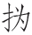
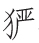

张生手持石鼓文 [1] ，劝我试作石鼓歌。少陵无人谪仙死 [2] ，才薄将奈石鼓何。周纲陵迟四海沸 [3] ，宣王愤起挥天戈 [4] 。大开明堂受朝贺 [5] ，诸侯剑佩鸣相磨。蒐于岐阳骋雄俊 [6] ，万里禽兽皆遮罗 [7] 。镌功勒成告万世 [8] ，凿石作鼓隳嵯峨 [9] 。从臣才艺咸第一 [10] ，拣选撰刻留山阿 [11] 。雨淋日炙野火燎 [12] ，鬼物守护烦

呵 [13] 。公从何处得纸本 [14] ，毫发尽备无差讹 [15] 。辞严义密读难晓，字体不类隶与蝌 [16] 。年深岂免有缺画 [17] ，快剑斫断生蛟鼍 [18] 。鸾翔凤翥众仙下 [19] ，珊瑚碧树交枝柯 [20] 。金绳铁索锁钮壮 [21] ，古鼎跃水龙腾梭 [22] 。陋儒编《诗》不收入 [23] ，《二雅》褊迫无委蛇 [24] 。孔子西行不到秦 [25] ，掎摭星宿遗羲娥 [26] 。嗟余好古生苦晚，对此涕泪双滂沱 [27] 。忆昔初蒙博士征，其年始改称元和 [28] 。故人从军在右辅 [29] ，为我度量掘臼科 [30] 。濯冠沐浴告祭酒 [31] ，如此至宝存岂多 [32] ？毡包席裹可立致，十鼓只载数骆驼。荐诸太庙比郜鼎 [33] ，光价岂止百倍过 [34] ？圣恩若许留太学 [35] ，诸生讲解得切磋 [36] 。观经鸿都尚填咽 [37] ，坐见举国来奔波 [38] 。剜苔剔藓露节角 [39] ，安置妥帖平不颇 [40] 。大厦深檐与盖覆，经历久远期无佗 [41] 。中朝大官老于事 [42] ，讵肯感激徒媕婀 [43] 。牧童敲火牛砺角 [44] ，谁复着手为摩挲 [45] 。日销月铄就埋没 [46] ，六年西顾空吟哦 [47] 。羲之俗书趁姿媚 [48] ，数纸尚可博白鹅 [49] 。继周八代争战罢 [50] ，无人收拾理则那 [51] ？方今太平日无事，柄任儒术崇丘轲 [52] 。安能以此上论列 [53] ，愿借辩口如悬河 [54] 。石鼓之歌止于此，呜呼吾意其蹉跎 [55] 。【题解】
这是一首歌咏石鼓文的诗。石鼓文，为我国现存最早的刻石文字，刻在十块鼓形石上，故名石鼓文。所刻书体为大篆，即籀文。刻石原在天兴（今陕西宝鸡）三畤原，唐初被发现，杜甫、韦应物等均有诗题咏。现十鼓尚存，但石上文字大多残缺磨灭，其中一鼓只字无存。原石现藏北京故宫博物院。关于石鼓的制作时代，唐人都以为周代所制，韩愈此诗直认为周宣王时物。宋人始提出秦始皇以前之说，经后人进一步考证，今已公认为秦刻石，但具体年代仍说法不一。此诗作于元和六年（811）秋，韩愈由河南令升任尚书兵部职方员外郎后不久。
【评析】
此为韩愈七古名篇之一。全诗长达六十六句，可分四大段。开头到“鬼物守护烦 呵”十六句为第一段，交代写作《石鼓歌》的缘起，极赞宣王会猎刻石纪功的盛举。从“公从何处得纸本”，到“掎摭星宿遗羲娥”十四句为第二段，正面写石鼓文，盛赞石鼓文辞的古奥和书法的拙朴精美。从“嗟余好古生苦晚”，到“经历久远期无佗”二十句为第三段，叙述石鼓文非比寻常的价值和自己呼吁朝廷保护石鼓文物的经过。从“中朝大官老于事”，至末十六句为第四段，批评朝中主事大臣不重视保护珍贵历史文物，对石鼓文物惨遭毁坏深致感慨。贺裳谓“韩诗至《石鼓歌》而才情纵恣已极”（《载酒园诗话》又编），所言诚是。此诗以文为诗，以议论为诗，体势宏敞，雄浑光怪，典重瑰丽，句奇语重，音韵铿訇，一韵到底。虽气势浑灏，终嫌稍乏藻润转折之妙。又因韩愈疏于考证，对孔子删《诗》无端指斥，失之武断。为抬高石鼓地位，对王羲之书法妄加贬抑，有欠公允。诸如此类，都表现了韩愈逞才使气的弊病。
【注释】
[1] 张生：指张籍。石鼓文：此指石鼓文的拓本。
[2] 少陵：指杜甫。谪仙：即李白。
[3] 周纲陵迟：周朝统治渐衰。纲：纲纪。陵迟：衰落。沸：指民怨沸腾。
[4] 宣王：周宣王姬静，公元前827—前782年在位，史称“中兴之主”。他曾对淮夷、徐戎、荆蛮、

狁等用兵，平定四境，故曰“挥天戈”。[5] 明堂：古代天子宣明政教的场所，凡朝会、祭祀、庆赏、选士、养老、教学等大典，均在此举行。
[6] 蒐（sōu）：春猎。岐阳：岐山南面。岐山在今陕西岐山县。骋：驰骋。雄俊：指打猎所乘骏马，亦指围猎的雄俊之士。据《左传•昭公四年》载，周成王曾大蒐于岐山之阳。《诗经•小雅•车攻》开头两句是“我车既攻，我马既同”，和石鼓文起句相同。《车攻》是写宣王会猎之事，于是韩愈误认为石鼓文所记亦为宣王事。
[7] 遮罗：张网拦捕。
[8] 镌（juān）功勒成：刻石纪功。
[9] 隳（huī）：毁坏。嵯（cuó）峨（é）：山石高峻貌。二句谓开山凿石制成石鼓，刻石记与诸侯会猎盛事以传后世。
[10] 咸：都。
[11] 山阿（ē）：山边。
[12] 日炙：太阳烤晒。燎：烧。
[13] 鬼物：指神灵。烦：劳驾。 （huī）呵：守卫呵护。
[14] 公：指张生。纸本：拓本。
[15] 差讹（é）：差错。
[16] 不类：不像。隶：隶书，由小篆简化而来的一种字体。蝌：指蝌蚪文，亦作“科斗文”，古代的一种字体，头大尾小，形如蝌蚪，故名。
[17] 岂免：难免。缺画：笔画缺少。
[18] 斫（zhuó）：砍。蛟鼍（tuó）：蛟龙。此句化用杜甫《李潮八分小篆歌》：“况潮小篆逼秦相，快剑长戟森相向。八分一字值千金，蛟龙盘拏肉屈强。”
[19] 鸾（luán）：凤一类鸟。翥（zhù）：鸟飞。
[20] 珊瑚：海中腔肠动物，骨骼相连，状如树枝，又名珊瑚树。班固《西都赋》：“珊瑚碧树，周阿而生。”交枝柯：树枝相交。柯：树枝。
[21] 锁钮壮：勾连扣结强劲有力。钮：一作“纽”。
[22] 古鼎跃水：典出《水经注•泗水》：“周显王四十二年，九鼎沦没泗渊，秦始皇时，而鼎见于斯水，始皇自以德合三代，大喜，使数千人没水求之，不得，所谓鼎伏也。”龙腾梭：典出《晋书•陶侃传》：“侃少时渔于雷泽，网得一织梭，以挂于壁，有顷，雷雨，自化为龙而去。”
[23] 陋儒：孤陋寡闻的儒生。《诗》：指《诗经》。
[24] 《二雅》：指《诗经》中的《大雅》和《小雅》。褊迫：褊狭局促。委（wēi）蛇（yí）：雍容自得貌。《诗经•召南•羔羊》：“退食自公，委蛇委蛇。”
[25] 秦：今陕西一带，即石鼓所在之地。
[26] 掎（jǐ）摭（zhí）：摘取。遗：丢掉。羲娥：羲和（传说为日御）和嫦娥，代指日月。
[27] 滂沱：形容涕泪之多，犹言泪如雨下。
[28] “忆昔”二句：指唐宪宗元和元年（806）韩愈被征为国子博士事。其《释言》云：“元和元年六月十日，愈自江陵法曹诏拜国子博士。”
[29] 故人：未详何人，旧注指郑余庆，不确。右辅：指右扶风，即凤翔府。天兴即为凤翔府属县。
[30] 度量：测量。臼科：坑穴。
[31] 濯（zhuó）冠：净洗冠服。濯冠沐浴：表示郑重诚敬。祭酒：国子监的主管官，掌邦国儒学训导之政令。时郑余庆任国子监祭酒，为韩愈的顶头上司。
[32] 岂多：意谓不多。
[33] 荐：进献。太庙，帝王的祖庙。郜（ɡào）鼎：郜国所造鼎，为春秋有名的青铜鼎。《春秋•桓公二年》：“取郜大鼎于宋，戊申，纳于太庙。”
[34] 光价：煊赫的声价。
[35] 太学：属国子监，为官办最高学府之一，唐规定五品以上官僚子孙和从三品以上官僚曾孙方能入学受教。
[36] 切磋（cuō）：相互研讨。
[37] 鸿都：东汉宫门名，其内置学及书库。《后汉书•灵帝纪》：光和二年二月，“始置鸿都门学生”。李贤注：“时其中诸生，皆敕州、郡、三公举召能为尺牍辞赋及工书鸟篆者相课试，至千人焉。”填咽（yè）：人多拥塞。《后汉书•蔡邕传》载：灵帝熹平四年，邕等奏求正定《六经》文字，并亲自书写经文，刻碑立于太学门外，“及碑始立，其观视及摹写者，车乘日千余两（辆），填塞街陌”。韩愈合二事而用之。
[38] 坐见：行见，立见。
[39] 剜：刀挖。剔：刮除。节角：笔锋棱角。
[40] 妥帖：平正。颇：倾斜。
[41] 无佗：犹无他，没有意外。
[42] 老于事：老于世故。
[43] 讵（jù）肯：岂肯，哪肯。感激：感奋激发。媕（ān）婀（ē）：没有主见，不负责任。
[44] 砺：磨。
[45] 着手：用手。摩挲（sā）：抚摸，爱护。
[46] 日销月铄（shuò）：日渐毁损。就：归于。
[47] 六年：从元和元年向国子祭酒报告呼吁，到元和六年作此诗时，正六年。西顾：时韩愈在长安，石鼓在西面的凤翔，故云。吟哦：指吟诵石鼓上刻的诗。
[48] 羲之：即王羲之，晋代著名书法家。俗书：时俗书法。趁姿媚：追求婉媚妍华。羲之书法，增损古法，变古拙朴质为妍美流便，在以复古为己任的韩愈看来，未免有点媚俗，故云“俗书趁姿媚”，意在抬高石鼓文书法的价值。
[49] 《晋书•王羲之传》载：羲之性爱鹅，山阴有一道士，养好鹅，羲之甚悦，固求市之，道士云：“为写《道德经》，当举群相赠耳。”羲之欣然，写毕，笼鹅而归，甚以为乐。此句典源出此。博：换取。
[50] 八代：指石鼓所在地经历了秦、汉、魏、晋、元魏、齐、周、隋八代。
[51] 则那（nuò）：怎奈何。那为“奈何”的合音。
[52] 柄：权柄，权力。此指执政者。丘：孔子名丘。轲：孟子名轲。
[53] 安能：怎样才能。此：指石鼓文事。论列：议论，申诉。
[54] 辩口如悬河：指能言善辩，滔滔不绝。典出《世说新语•言语》：王衍谓郭象“语议如悬河泻水，注而不竭”。
[55] 蹉跎：本指岁月虚度，此有徒劳无功意。